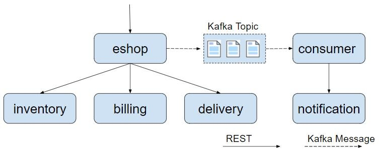
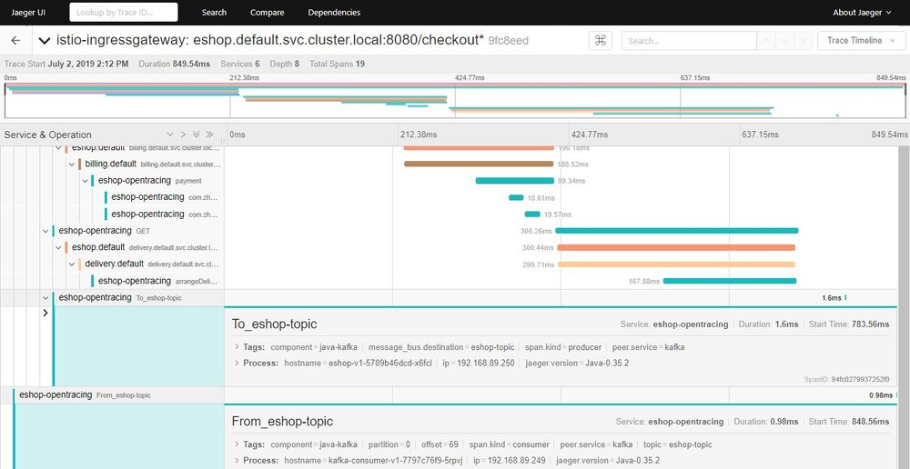
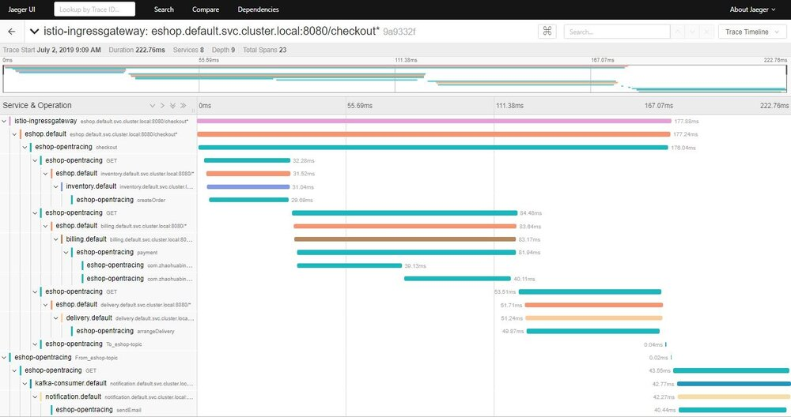
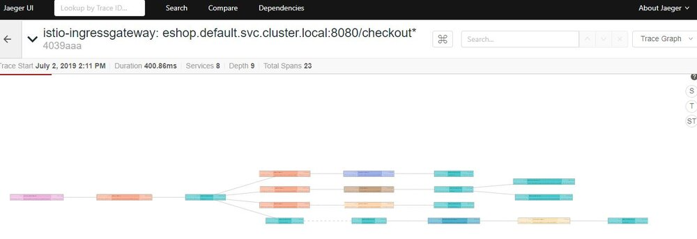

在上一篇文章中，我们通过一个网上商店的示例程序学习了如何使用Opentracing在Istio服务网格中传递分布式调用跟踪的上下文，以及如何将方法级的调用信息加入到Istio/Envoy生成的调用链中。采用Opentracing可以减少应用代码中传递HTTP header的重复代码；也可以根据需要在调用链中加入更细粒度的Span，以用于对系统性能瓶颈进行在线分析。
在实际项目中，除了同步调用之外，异步消息也是微服务架构中常见的一种通信方式。在本篇文章中，我将继续利用eshop demo程序来探讨如何通过Opentracing将Kafka异步消息也纳入到Istio的分布式调用跟踪中。
eshop 示例程序结构
如下图所示，demo程序中增加了发送和接收Kafka消息的代码。eshop微服务在调用inventory，billing，delivery服务后，发送了一个kafka消息通知，consumer接收到通知后调用notification服务的REST接口向用户发送购买成功的邮件通知。

将Kafka消息处理加入调用链跟踪
植入Kafka Opentracing代码
首先从github下载代码。
git clone git@github.com:zhaohuabing/istio-opentracing-demo.git
git checkout kafka-tracking
可以直接使用 kafka-tracking 这个分支的代码，但建议跟随下面的步骤查看相关的代码，以了解各个步骤背后的原理。
根目录下分为了rest-service和kafka-consumer两个目录，rest-service下包含了各个REST服务的代码，kafka-consumer下是Kafka消息消费者的代码。
首先需要将spring kafka和Opentracing kafka的依赖加入到两个目录下的pom文件中。
<dependency>
<groupId>org.springframework.kafka</groupId>
<artifactId>spring-kafka</artifactId>
</dependency>
<dependency>
<groupId>io.opentracing.contrib</groupId>
<artifactId>opentracing-kafka-client</artifactId>
<version>${version.opentracing.kafka-client}</version>
</dependency>
在rest-service目录中的KafkaConfig.java中配置消息Producer端的Opentracing Instrument。TracingProducerInterceptor会在发送Kafka消息时生成发送端的Span。
@Bean
public ProducerFactory<String, String> producerFactory() {
Map<String, Object> configProps = new HashMap<>();
configProps.put(ProducerConfig.BOOTSTRAP_SERVERS_CONFIG, bootstrapAddress);
configProps.put(ProducerConfig.KEY_SERIALIZER_CLASS_CONFIG, StringSerializer.class);
configProps.put(ProducerConfig.VALUE_SERIALIZER_CLASS_CONFIG, StringSerializer.class);
configProps.put(ProducerConfig.INTERCEPTOR_CLASSES_CONFIG, TracingProducerInterceptor.class.getName());
return new DefaultKafkaProducerFactory<>(configProps);
}
在kafka-consumer目录中的KafkaConfig.java中配置消息Consumer端的Opentracing Instrument。TracingConsumerInterceptor会在接收到Kafka消息是生成接收端的Span。
@Bean
public ConsumerFactory<String, String> consumerFactory() {
Map<String, Object> props = new HashMap<>();
props.put(ConsumerConfig.BOOTSTRAP_SERVERS_CONFIG, bootstrapAddress);
props.put(ConsumerConfig.GROUP_ID_CONFIG, groupId);
props.put(ConsumerConfig.KEY_DESERIALIZER_CLASS_CONFIG, StringDeserializer.class);
props.put(ConsumerConfig.VALUE_DESERIALIZER_CLASS_CONFIG, StringDeserializer.class);
props.put(ConsumerConfig.INTERCEPTOR_CLASSES_CONFIG, TracingConsumerInterceptor.class.getName());
return new DefaultKafkaConsumerFactory<>(props);
}
只需要这两步即可完成Spring程序的Kafka Opentracing代码植入。下面安装并运行示例程序查看效果。
安装Kafka集群
示例程序中使用到了Kafka消息，因此需要部署一个Kafka集群。可以参照 Kafka Quickstart 在Kubernetes集群外部署Kafka；也可以使用 Kafka Operator 直接将Kafka部署在Kubernetes集群中。
部署demo应用
修改Kubernetes yaml部署文件 k8s/eshop.yaml，设置Kafka bootstrap server，以用于demo程序连接到Kafka集群中。
apiVersion: extensions/v1beta1
kind: Deployment
metadata:
name: eshop-v1
......
spec:
containers:
- name: eshop
image: zhaohuabing/istio-opentracing-demo:kafka-opentracing
ports:
- containerPort: 8080
env:
....
//在这里加入Kafka server地址
- name: KAFKA_BOOTSTRAP_SERVERS
value: "192.168.89.192:9092"
---
apiVersion: extensions/v1beta1
kind: Deployment
metadata:
name: kafka-consumer-v1
......
spec:
containers:
- name: kafka-consumer
image: zhaohuabing/istio-opentracing-demo-kafka-consumer:kafka-opentracing
env:
....
//在这里加入Kafka server地址
- name: KAFKA_BOOTSTRAP_SERVERS
value: "192.168.89.192:9092"
然后部署应用程序，相关的镜像可以直接从dockerhub下载，也可以通过源码编译生成。
kubectl apply -f k8s/eshop.yaml
在浏览器中打开地址：http://${NODE_IP}:31380/checkout，以触发调用eshop示例程序的REST接口。然后打开Jaeger的界面 http://${NODE_IP}:30088 查看生成的分布式调用跟踪信息。 
从图中可以看到，在调用链中增加了两个Span，分布对应于Kafka消息发送和接收的两个操作。由于Kafka消息的处理是异步的，消息发送端不直接依赖接收端的处理。根据Opentracing对引用关系的定义，From_eshop_topic Span 对 To_eshop_topic Span 的引用关系是 FOLLOWS_FROM 而不是 CHILD_OF 关系。
将调用跟踪上下文从Kafka传递到REST服务
现在eshop代码中已经加入了REST和Kafka的Opentracing Instrumentation，可以在进行REST调用和发送Kafka消息时生成调用跟踪信息。但如果需要从Kafka的消息消费者的处理方法中调用一个REST接口呢？
我们会发现在eshop示例程序中，缺省生成的调用链里面并不会把Kafka消费者的Span和其发起的调用notification服务的REST请求的Span关联在同一个Trace中。
要分析导致该问题的原因，我们首先需要了解“Active Span”的概念。在Opentracing中，一个线程可以有一个Active Span，该Active Span代表了目前该线程正在执行的工作。在调用Tracer.buildSpan()方法创建新的Span时，如果Tracer目前存在一个Active Span，则会将该Active Span缺省作为新创建的Span的Parent Span。
Tracer.buildSpan 方法的说明如下：
Tracer.SpanBuilder buildSpan(String operationName)
Return a new SpanBuilder for a Span with the given `operationName`.
You can override the operationName later via BaseSpan.setOperationName(String).
A contrived example:
Tracer tracer = ...
// Note: if there is a `tracer.activeSpan()`, it will be used as the target of an implicit CHILD_OF
// Reference for "workSpan" when `startActive()` is invoked.
// 如果存在active span，则其创建的新Span会隐式地创建一个 CHILD_OF 引用到该active span
try (ActiveSpan workSpan = tracer.buildSpan("DoWork").startActive()) {
workSpan.setTag("...", "...");
// etc, etc
}
// 也可以通过asChildOf方法指定新创建的Span的Parent Span
// It's also possible to create Spans manually, bypassing the ActiveSpanSource activation.
Span http = tracer.buildSpan("HandleHTTPRequest")
.asChildOf(rpcSpanContext) // an explicit parent
.withTag("user_agent", req.UserAgent)
.withTag("lucky_number", 42)
.startManual();
分析Kafka Opentracing Instrumentation的代码，会发现TracingConsumerInterceptor在调用Kafka消费者的处理方法之前已经把消费者的Span结束了，因此发起REST调用时tracer没有active span，不会将Kafka消费者的Span作为后面REST调用的parent span。
public static <K, V> void buildAndFinishChildSpan(ConsumerRecord<K, V> record, Tracer tracer,
BiFunction<String, ConsumerRecord, String> consumerSpanNameProvider) {
SpanContext parentContext = TracingKafkaUtils.extractSpanContext(record.headers(), tracer);
String consumerOper =
FROM_PREFIX + record.topic(); // <====== It provides better readability in the UI
Tracer.SpanBuilder spanBuilder = tracer
.buildSpan(consumerSpanNameProvider.apply(consumerOper, record))
.withTag(Tags.SPAN_KIND.getKey(), Tags.SPAN_KIND_CONSUMER);
if (parentContext != null) {
spanBuilder.addReference(References.FOLLOWS_FROM, parentContext);
}
Span span = spanBuilder.start();
SpanDecorator.onResponse(record, span);
//在调用消费者的处理方法之前，该Span已经被结束。
span.finish();
// Inject created span context into record headers for extraction by client to continue span chain
//这个Span被放到了Kafka消息的header中
TracingKafkaUtils.inject(span.context(), record.headers(), tracer);
}
此时TracingConsumerInterceptor已经将Kafka消费者的Span放到了Kafka消息的header中，因此从Kafka消息头中取出该Span，显示地将Kafka消费者的Span作为REST调用的Parent Span即可。
为MessageConsumer.java使用的RestTemplate设置一个TracingKafka2RestTemplateInterceptor。
@KafkaListener(topics = "eshop-topic")
public void receiveMessage(ConsumerRecord<String, String> record) {
restTemplate
.setInterceptors(Collections.singletonList(new TracingKafka2RestTemplateInterceptor(record.headers())));
restTemplate.getForEntity("http://notification:8080/sendEmail", String.class);
}
TracingKafka2RestTemplateInterceptor是基于Spring Opentracing Instrumentation的TracingRestTemplateInterceptor修改的，将从Kafka header中取出的Span设置为出向请求的Span的Parent Span。
@Override
public ClientHttpResponse intercept(HttpRequest httpRequest, byte[] body, ClientHttpRequestExecution xecution)
throws IOException {
ClientHttpResponse httpResponse;
SpanContext parentSpanContext = TracingKafkaUtils.extractSpanContext(headers, tracer);
Span span = tracer.buildSpan(httpRequest.getMethod().toString()).asChildOf(parentSpanContext)
.withTag(Tags.SPAN_KIND.getKey(), Tags.SPAN_KIND_CLIENT).start();
......
}
在浏览器中打开地址：http://${NODE_IP}:31380/checkout ，以触发调用eshop示例程序的REST接口。然后打开Jaeger的界面 http://${NODE_IP}:30088 查看生成的分布式调用跟踪信息。 
从上图可以看到，调用链中出现了Kafka消费者调用notification服务的sendEmail REST接口的Span。从图中可以看到，由于调用链经过了Kafka消息，sendEmail Span的时间没有包含在checkout Span中。
在Jaeger UI上将图形切换为trace graph，可以更清晰地表示出各个Span之间的调用关系。 
总结
Istio服务网格通过分布式调用跟踪来提高微服务应用的可见性。我们可以使用Opentracing Instrumentation来代替应用编码传递分布式跟踪的相关http header；还可以将方法级的调用跟踪和Kafka消息的调用跟踪加入到Istio生成的调用跟踪链中，以提供更细粒度的调用跟踪信息。
该方案可以达到分布式调用跟踪的目的，但需要在代码框架层进行一定的改动，以植入调用跟踪的相关代码。理想的方案是由服务网格基础设施层来完成所有调用跟踪的数据收集和生成，这样应用代码只需关注业务逻辑，而不用处理调用跟踪信息的生成。可以在Envoy中加入插件来为Kafka消息生成调用跟踪信息，但目前看来服务网格还没有很好的办法在上下游服务之前传递调用跟踪上下文。
参考资料
- 本文中eshop示例程序的源代码
- Distributed Tracing with Apache Kafka and Jaeger
- [OpenTracing Apache Kafka Client Instrumentation](https://github.com/opentracing-contrib/java-kafka-client TracingRestTemplateInterceptor.java)
- Kafka quick start
- 参考代码：
- https://github.com/opentracing-contrib/java-spring-web/blob/master/opentracing-spring-web/src/main/java/io/opentracing/contrib/spring/web/client/TracingRestTemplateInterceptor.java
- https://github.com/burkaa01/jaeger-tracing-kafka/blob/master/spring-consumer-app/src/main/java/com/github/burkaa01/springconsumer/config/TracingChildRestTemplateInterceptor.java
- https://github.com/opentracing-contrib/java-kafka-client/blob/master/opentracing-kafka-client/src/main/java/io/opentracing/contrib/kafka/TracingConsumerInterceptor.java
- https://github.com/opentracing-contrib/java-kafka-client/blob/master/opentracing-kafka-client/src/main/java/io/opentracing/contrib/kafka/TracingKafkaUtils.java